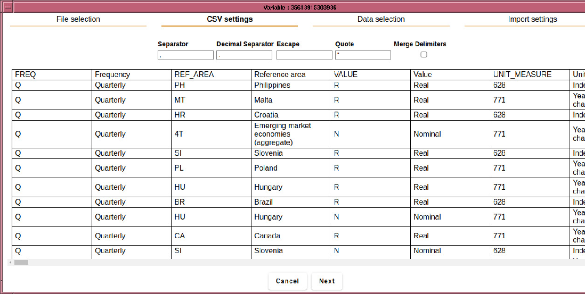
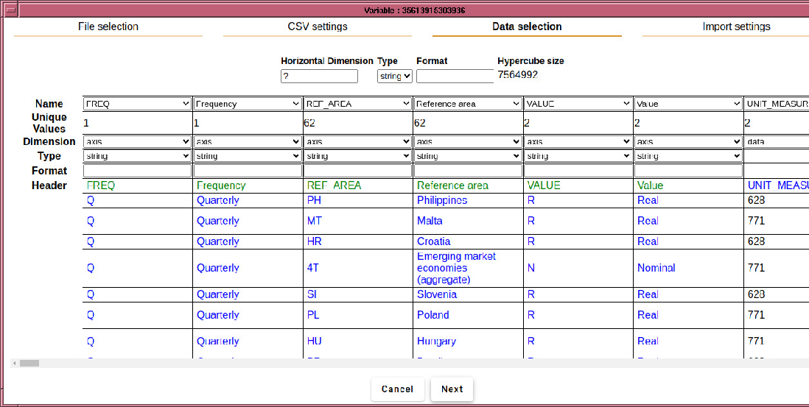
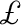
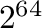
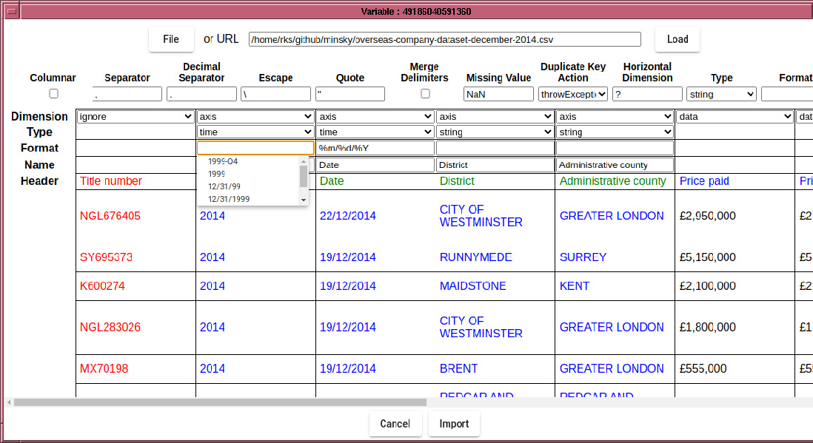

In this case, the automatic parsing system has worked things out correctly, but often times it needs help from the computer user. An example is as follows: 
In this example, Ravel has failed to determine where the data starts, probably because of the columns to the right of the ``Price'' columns. So the first thing to do is tell it where the data is located. This is one function of the context menu for data importing. The options are:


Note that this causes all columns to the right of ``Price paid'' to be treated as data, which is not right, since the columns to the right of ``Price (text infill)'' are text based columns, not data. So we need to mark those columns as either ``axis'' or ``ignore''. To do that, click and drag your mouse on the header field, which will cause those columns to be selected, like so: 
Then in the dimensions row, select ``axis'', which flips the selected columns: 
Now the axes index labels are rendered in blue, the axes names in
green and the data is in black. In this example, some axes have unique
values, which are not particularly useful to scan over. Other examples
might have columns that duplicate others, for example when the data
has been entered via a database program that allows the user to type
country codes (e.g., LX) rather than the full country name (Luxembourg).
Only one of these axes is needed to uniquely specify the country,
so you can exclude the unwanted dimension by choosing ``ignore''
in the ``Dimension'' row. The deselected columns are rendered in
red, indicating that its data will not be imported into Ravel:

In this example, the axis names has not been correctly inferred. Whilst, one can manually edit the axis names in the ``Name'' line, a quick shortcut is to select ``Populate column labels'' from the context menu.